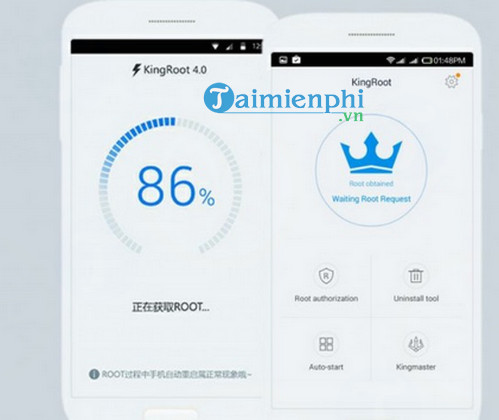
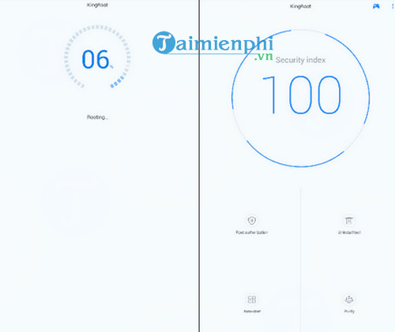

Phần mềm KingRoot hỗ trợ root điện thoại Android hiệu quả và chuyên nghiệp, KingRoot tương thích với hầu hết các dòng điện thoại Android hiện nay như Samsung, Oppo, Zenfone hay LG. Sử dụng KingRoot, điện thoại của bạn sẽ giúp bạn trải nghiệm nhiều ứng dụng hơn ngoài Google Play.
KingRoot cho phép root điện thoại Android chỉ với một vài click chuột, root với tốc độ nhanh giúp bạn mở khóa nhiều tính năng của điện thoại như tùy chỉnh giao diện hay cài đặt những ứng dụng, game chỉ chạy trên thiết bị đã root. Cũng có tính năng Root điện thoại, phần mềm Mobogenie đã được nhiều người thử nghiệm. Bên cạnh đó, Mobogenie còn hỗ trợ sao lưu và quản lý dữ liệu điện thoại Android trên máy tính.

KingRoot là một ứng dụng hỗ trợ người dùng có thể dễ dàng Root điện thoại Android chỉ bằng những cú click chuột đơn giản, đây là một phần mềm được phát triển tại Trung Quốc nhưng có thêm phiên bản bằng tiếng Anh nên người dùng có thể tải về và sử dụng miễn phí.
Trong quá trình bạn tải KingRoot về để sử dụng và cài đặt người dùng có thể Root điện thoại Android của mình một cách đơn giản và nhanh nhất, sau khi Root xong bạn cũng có thể tùy chỉnh giao diện hay cài đặt sao cho phù hợp với mục đích sử dụng của mình.

Lợi ích của KingRoot mang tới cho người dùng được hiểu đơn giản là việc chiếm quyền điều khiển và có thể làm được nhiều việc hơn trên những chiếc điện thoại của mình, nó hoàn toàn khác biệt với việc bạn phải thay recovery hay tiến hành thay đổi Kernel của máy, nếu như hiện nay có rất nhiều ứng dụng có chức năng có thể root các thiết bị để sử dụng Android nhưng phải cài đặt trên máy tính, thì với KingRoot người dùng không cần phải cài đặt qua máy tính, bạn chỉ cần cài đặt và sử dụng trên điện thoại của mình.
KingRoot có thể chạy trên hầu hết các thiết bị Android hiện nay tới từ nhiều hãng điện thoại khác nhau như HTC, Samsung, Meizu, Huawei, Moto...
KingRoot là một trong những ứng dụng root điện thoại Android nhanh gọn, không cần đến máy tính, giúp bạn nhanh chóng làm chủ được thiết bị của mình. Ứng dụng này được đánh giá là một trong những phần mềm root máy Android tốt nhất hiện nay. Tương tự như vậy, Kingo Android Root cũng mang tới tính năng Root điện thoại Android bằng các thao tác đơn giản. Phần mềm Kingo Android Root chạy trên nền Windows và hoạt động khá hiệu quả.
KingRoot hỗ trợ root hầu hết các thiết bị Android như: HTC One
X,Nokia X, HTC One V, HTC Incredible S G11, HTC Desire HD G10, HTC Desire
G7... Ngoài ra, người dùng cũng có thể trải nghiệm thêm phần mềm One Click
Root - một trong những phần mềm hỗ trợ root thiết bị Android hiệu quả. Với One
Click Root, bạn dễ dàng root những chú dế đáng yêu của mình.
Các tính năng chính của KingRoot:
- Root điện thoại Android
- Root tự động với tốc độ nhanh
- Làm chủ các tính năng của thiết bị
- Hỗ trợ hầu hết các thiết bị chạy Android
Link download (trang chủ):